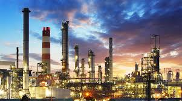
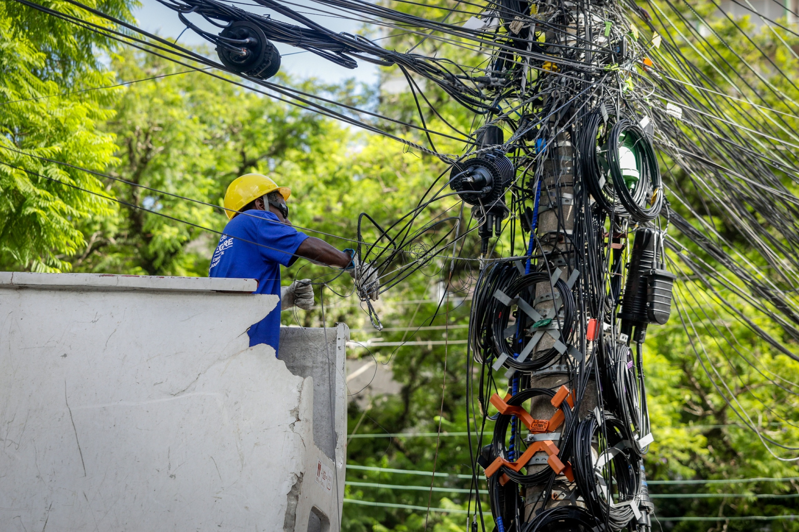
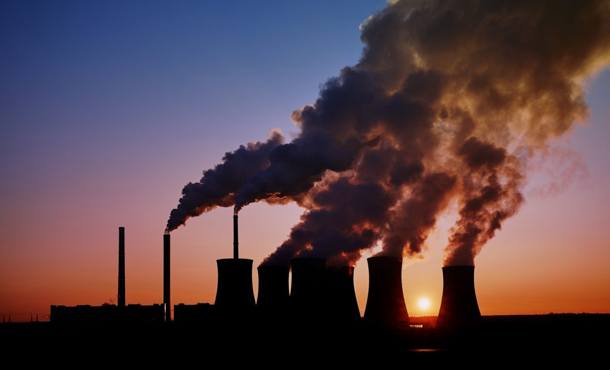
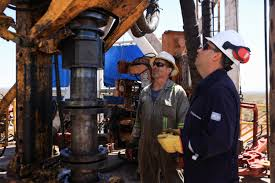

Energy in the Industrial Sector
The industrial sector is one of the largest consumers of energy worldwide, relying mainly on fossil fuels natural gas, oil, and coal to power machinery, manufacturing processes, and transportation. This heavy dependence on polluting sources generates significant greenhouse gas emissions and air pollution, making industry a key area where the transition to cleaner, more efficient energy is essential.

Obsolete infrastructure
Global industrial energy infrastructure is often outdated, with aging pipelines, machinery, and facilities that cause high energy losses, frequent breakdowns, and rising costs. Modernizing these systems is essential to improve efficiency, reduce waste, and support the transition toward cleaner and more reliable energy sources.

Air pollution
Industrial activity is one of the leading causes of air pollution. Burning fossil fuels releases harmful substances such as particulate matter, sulfur dioxide, and nitrogen oxides that degrade air quality and cause serious health problems, including respiratory and cardiovascular diseases. The economic and social costs are enormous, from rising healthcare expenses to lost productivity.

Fossil fuels, oil and gas
Fossil fuels coal, oil, and natural gas remain the dominant energy sources powering global industry. Despite their efficiency and widespread availability, their extraction and combustion release large amounts of greenhouse gases, making them the primary driver of climate change and environmental degradation.